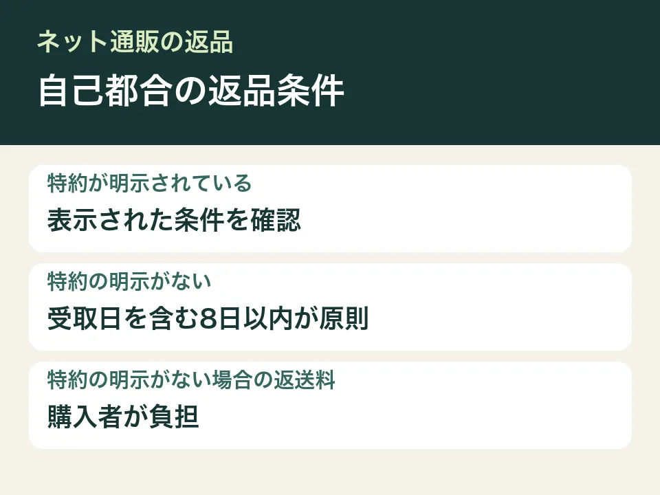
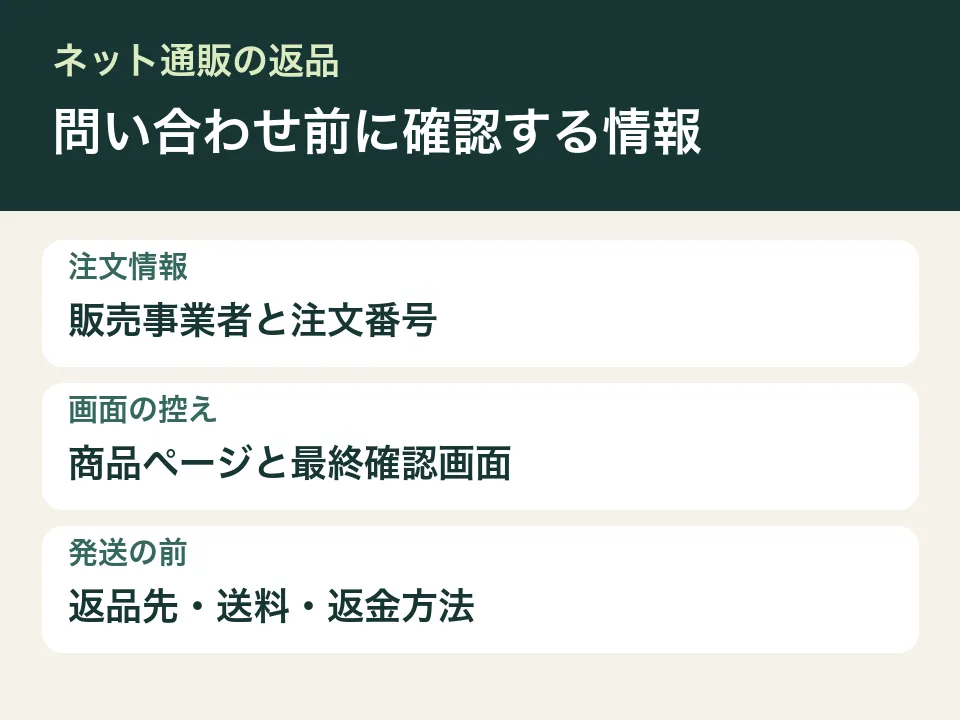

事業者から商品を買うネット通販で自己都合の返品をしたいときは、商品ページと注文の最終確認画面に明示された返品特約を確認します。特約の明示がない場合は、原則として商品を受け取った日を含む8日以内に返品でき、返送料は購入者負担です。届いた品が注文内容と違う場合は、自己都合の返品と分けて対応します。2026年11月26日時点の消費者庁の案内に基づきます。
01返品特約の有無で期限と送料が変わる
返品特約とは、返品の可否や期限、送料の負担などを販売事業者が定めた条件です。通信販売には訪問販売などのクーリング・オフ制度は適用されません。自己都合の返品を判断するときは、注文時の表示を確認します。

| 届いた商品と注文時の表示 | 確認すること |
|---|---|
| 商品は注文どおりで、返品特約が明示されていた | 返品できるか、期限、開封時の扱い、送料負担を特約で確認 |
| 商品は注文どおりで、返品特約の明示がなかった | 受取日を含む8日以内が原則。返送料は購入者負担 |
| 商品が注文内容と違う、または不良がある | 注文内容と商品の状態を記録し、販売事業者の案内を確認 |
消費者庁の案内では、ネット通販で返品特約に従う場合、広告と最終確認画面の両方で特約が明瞭に表示されていることが条件です。通販モールで複数の店が出品している場合は、購入した商品の販売事業者と注文時に表示された条件を確認します。セール品に個別条件がある場合は、その商品の表示も見ます。
02受取日から8日以内はいつまで？
特約の明示がない商品を11月26日に受け取ったと仮定します。受け取った日が初日なので、8日目は「11月26日＋7日＝12月3日」です。注文日や発送日を起点にすると、期限の見積もりが変わります。
注意返品可能と表示されていても、期限が「連絡まで」なのか「商品到着まで」なのかで行動が変わります。返送前に注文時の表示を読み、手元の控えに日付を残します。
03返品の連絡から返金確認までの手順

- 注文履歴を開き、販売事業者名、注文番号、受け取った日を確認します。
- 商品ページや最終確認画面の控えがあれば、返品の可否、期限、開封条件、返送料を確認します。画面の控えが見つからないときは、注文確認メールなども見返します。
- 期限内に、案内された窓口へ注文番号と返品理由を伝えます。商品が注文内容と違う場合は、ラベルや現物の写真を保存し、注文した品との違いを伝えます。
- 返品先、指定の発送方法、返送料の負担、返金方法を確認し、返送後は発送控えを保存します。返金は注文履歴や支払明細で確認します。
注文と違う商品や不良の連絡では、自己都合と区別して理由を伝えます。 例えばサイズ選びを誤った場合と、注文履歴に記載のサイズとは違う品が届いた場合では、販売事業者に伝える情報が変わります。
04よくある質問
ネット通販はクーリング・オフできますか？
通信販売にクーリング・オフは適用されません。自己都合の返品はまず返品特約を確認します。
返品特約の明示がないとき、送料は誰が払いますか？
受け取った商品をこのルールで返品する場合、返送料は購入者が負担します。
開封してからでも返品できますか？
特約が明示されている場合は、開封や使用についての条件を確認します。開封して初めて注文品と違うと分かった場合は、現物と注文履歴の違いを販売事業者に伝えます。
05まとめ
結論自己都合の返品は注文時の特約を確認し、特約の明示がなければ商品を受け取った日から期限を数えます。
- 連絡前に販売事業者、期限、返送料を確かめます。
- 注文内容との違いや不良が理由なら、写真と注文履歴を手元に置きます。